大家好，我姓刘，大家叫我小刘就好。从去年微博关注 @宅豆丹侠 的账号开始到后面微信订阅宅豆APP的公众号，一直以来我都是宅豆的铁杆粉丝。
观望了这么久，看了这么多朋友的晒家志，今年已经到了夏秋换季，我终于尝试着下单了宅豆 ¥998的线上设计服务
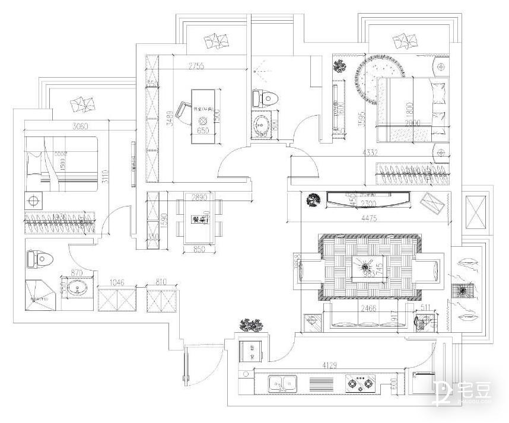 ▲刘小姐家平面布局图这是我家的平面布局图，这次我晒给大家看的主要是玄关进来作为门面的客餐厅和我们的一间主卧
而下单之后宅豆分派给我们的设计师是 陈木子 小姐——很棒的一位设计师，至少她这次给我设计的 房非常合我心意！在这里向大家推荐哦~
好了，接下来就让我把三个区域的前后对比分别介绍给大家。
我们家客厅改造前，因为我算是一个比较爱干净的人，自认为打理的还是挺整洁的，但就是太规整了，我反而觉得有些单调过头，虽然一眼看过去没什么差错，但也没什么出彩的地方。
看宅豆晒家志这么久，我也很希望我的家能有一个属于自己的主题风格。
而这次陈木子设计师依据我家淡蓝色的壁纸为基础，为我家作出了我想要的改变。
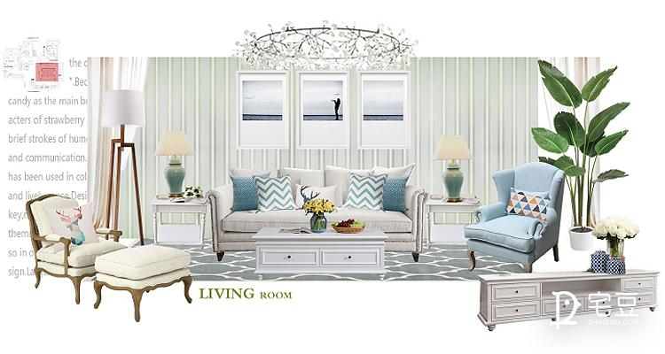 ▲客厅设计方案图这是她在和我详细沟通（我告诉了她我喜欢的意向风格）之后，她在与我约定的时间内交付给我的设计方案。
一直以来我都对美式的浪漫抱有特别的期待，这种风格温馨起来是非常别致的，它的家具产品不同于北欧和日式，往往显得比较厚重，但正因如此，我才觉得这种风格更能给人一种属于家的安全感。
出于对陈木子设计师的满意，我购买了她设计方案里的大部分产品，首当其冲就是这个小沙发。
我想这种带点轻微复古感的客厅沙发应该是美式设计里都会有的吧？之前我看的宅豆案例就是这样，当然，还少不了和它配套的单个沙发椅。
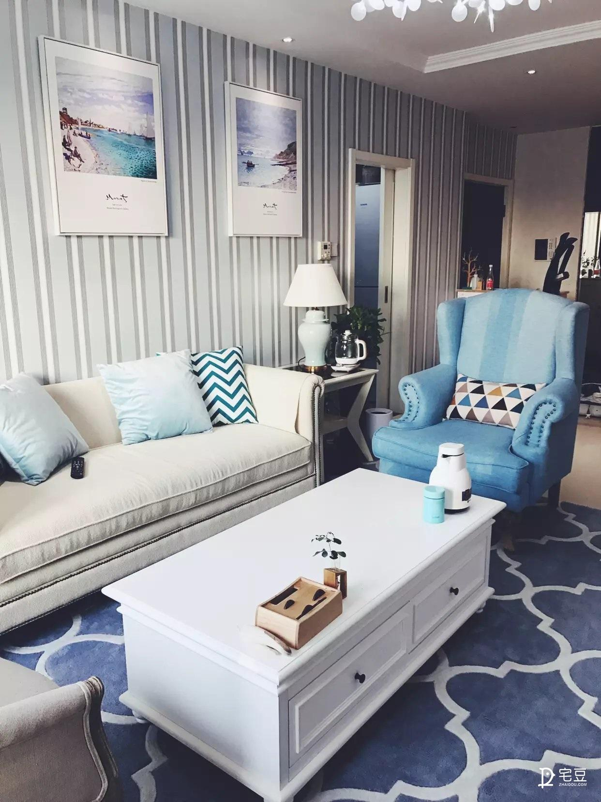左边这一把我是按照方案图上买的~本来在犹豫要不要换款成白色，因为怕蓝色深了不好看，但设计师说这样客厅就缺乏点缀色了，于是作罢。结果买回来摆好后，因为包括茶几在内的部分都是白色，这么大块蓝色一放进去就左右逢源特别和谐。
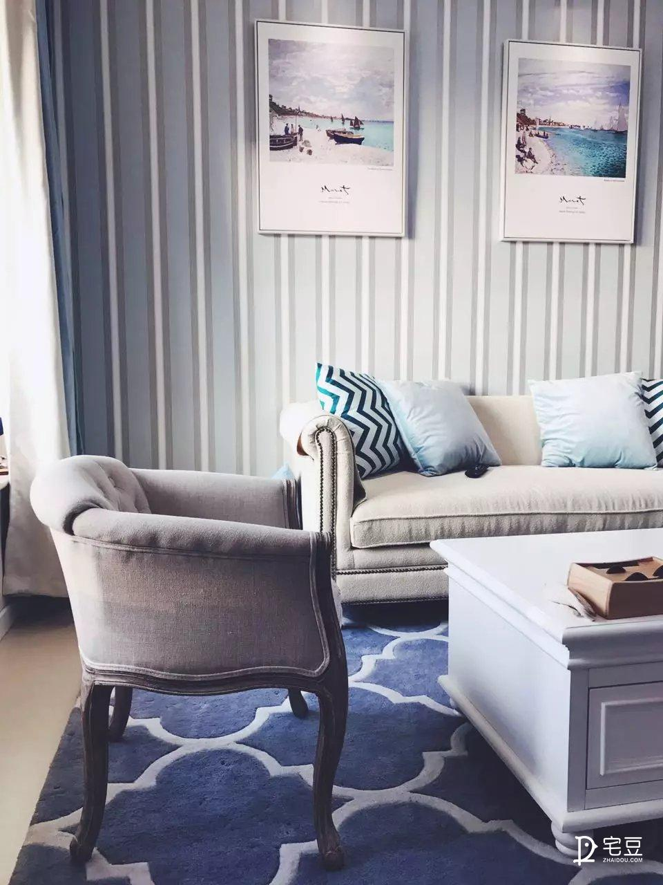右边这一把我找设计师换了，也没买脚凳，我怕放不下，自我感觉还是OK的，你们觉得呢？
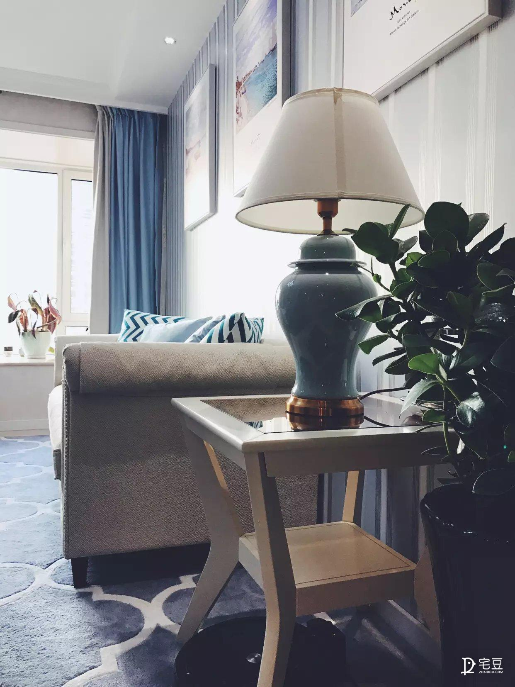这是沙发旁边的小边几，原来是L型沙发，放不了这种，换成小沙发之后就可以了！灯的款式是设计师挑选的特别有感觉的复古花瓶款，旁边还可以摆绿植，整个客厅比原来有生气多了！
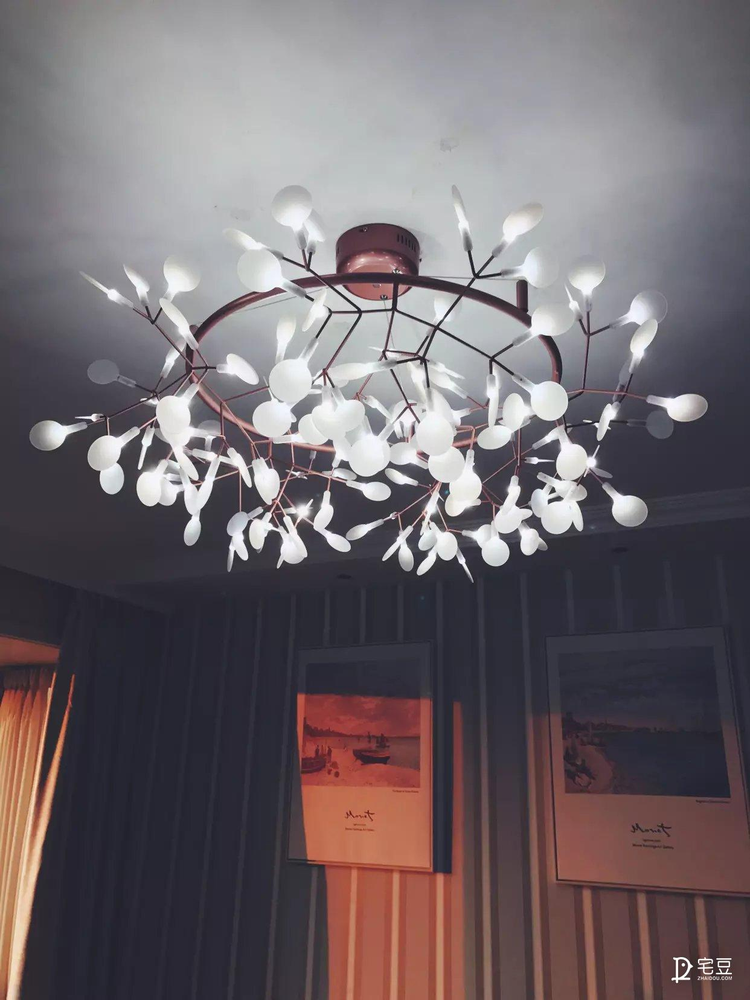这个灯是客厅我最喜欢的部分，整体造型就像一顶花冠，特别仙气，而且和餐厅那边也很合搭，大家看到后面就明白我说的。
餐厅改造前也和客厅一样，看似风格简单，实则没有风格，我当初装修的时候基本就是凭直觉看着什么颜色相似就统统买回来随便搭的，而经设计师联合客厅一起整体规划后，她给出了如下设计方案：
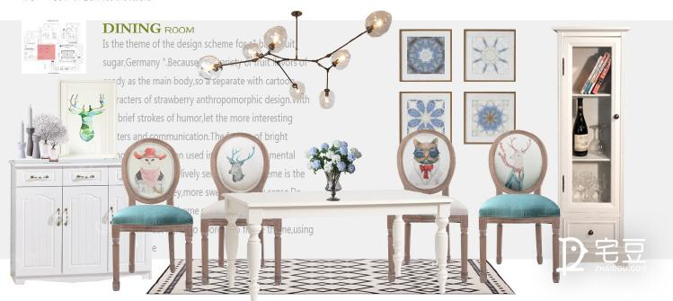 ▲餐厅设计方案图因为椅背上的动物头像图，给我感觉餐厅的设计就比较童话了，但也正击中我的小红心~毕竟我自己也养了猫的，所以看到这些小动物图案觉得格外亲切，当即就决定要把这套桌椅买回来。
眼尖的朋友应该看到我的吊灯没有换哦，因为这个吊灯也是花朵形的，我感觉跟客厅那边的花冠顶灯还挺配，所以就私心保留了下来。
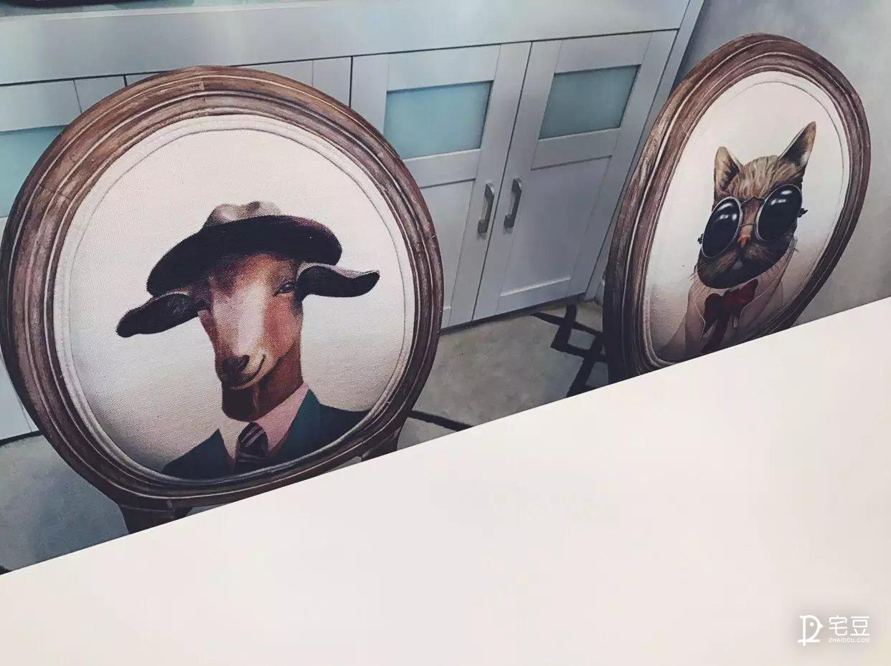拉近给大家欣赏一下局部~桌椅和客厅那边一样，都是实木的，质量上乘，而且应用了做旧工艺，我真的特别迷恋这种半新不旧的年代感，非常质朴而温暖，因为图案的原因又不乏一点小俏皮。
最后是我们家的卧室，准确的说是主卧。因为另一个是客卧，而我手头预算有限，所以我打算先把主卧改了，客卧留作以后再说。
卧房相对来说就没有外面那么整齐了，大家随便看看不要嫌弃。
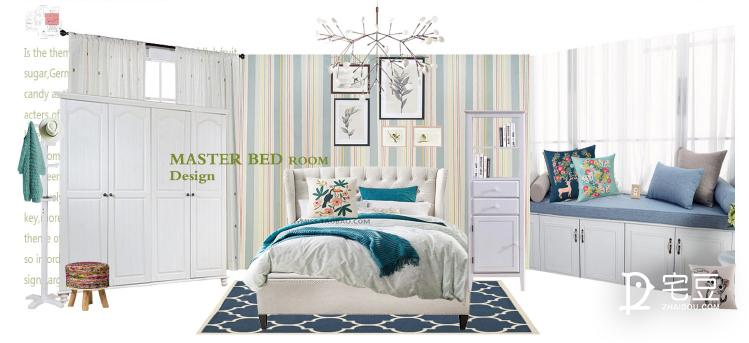 ▲主卧设计方案图陈木子设计师给我的方案图都是很完整的，看得出来她的负责与用心，无论是色彩搭配还是产品造型，都和外面是一体的。
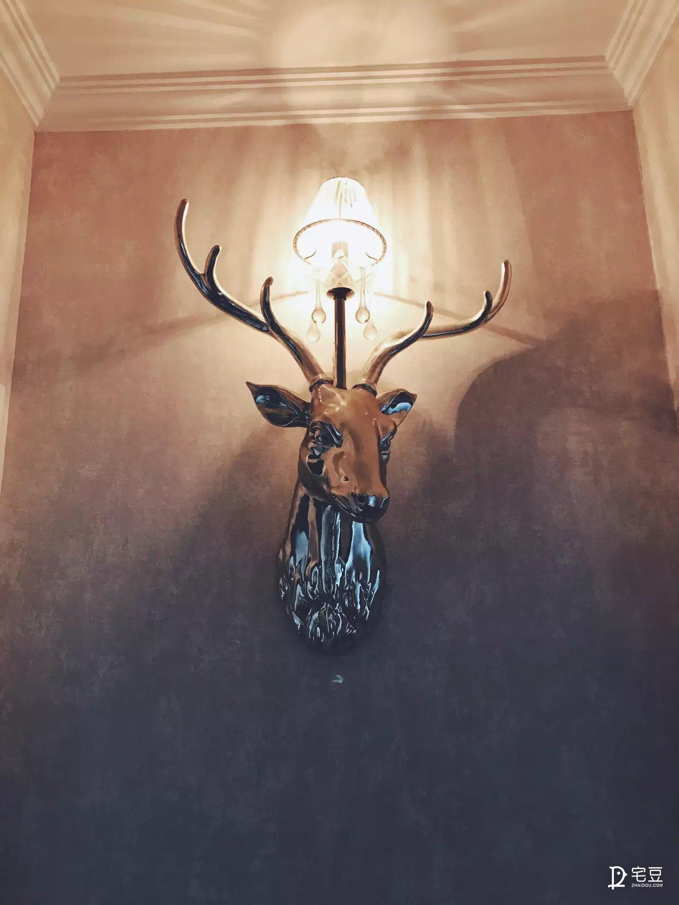这是客餐厅通往卧室的廊口，陈木子设计师也有设计餐厅椅背同款的小动物兽头壁灯，晚上打开特别有FEEL~
卧室改造后的图片只有一张，因为和方案图不太一样，我就不贴出来误导大家了~主要是我预算有限，所以没有买齐，最后就用了自己之前买的印花床罩，颜色比较深，有点类似藏蓝。
不过设计师的图纸和产品清单都已经给到我，以后手头宽裕一些后我会再把卧室的东西补齐，再次希望大家不要嫌弃~
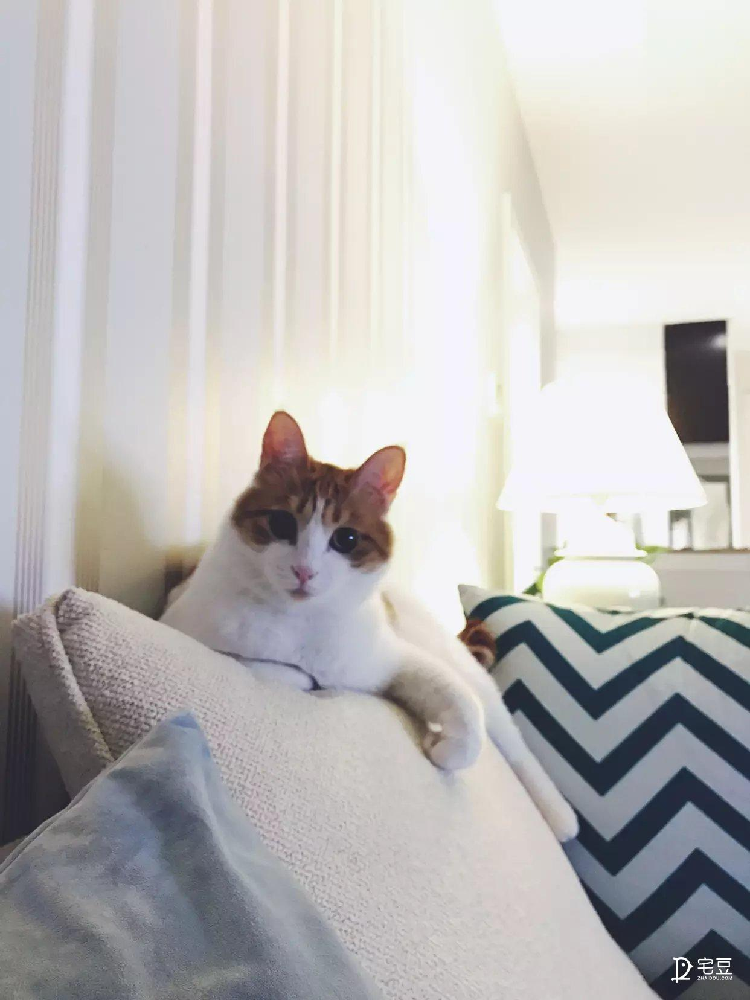上上周的晒家志里看到有朋友用自己养的猫猫作结尾，那么这次我也来，发个自家小招财给大家say goodbye咯~
业主此单为线上设计项目，以简美风格为主，在不改变原有宜居概念的基础上，从颜色、细节、材质等方面进行了多处规划改造。
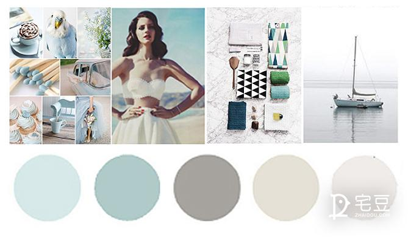 ▲项目色搭方案如图，该项目以清新的浅蓝色与干净的白色为主色调，细节处融入些许绿意点缀，是一种具有折中主义的冷色搭配，可以使整个空间淡雅冷静也不失温馨灵动。
业主在客餐厅整体色搭方面并未自行更改配色，执行效果较好，然而细节处还有可以更改的地方，如：客厅挂画稍显赘余，总体超出了正中沙发的长度，不符合挂画搭配美学。
而卧室从壁纸到搭配都失去了简美风格的特点，且与外部环境违和，还是建议以方案图纸上的产品为参考进行更换。
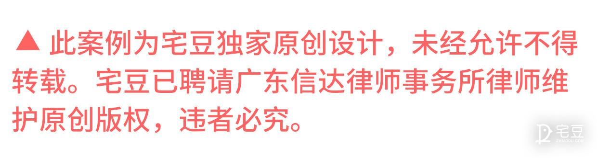